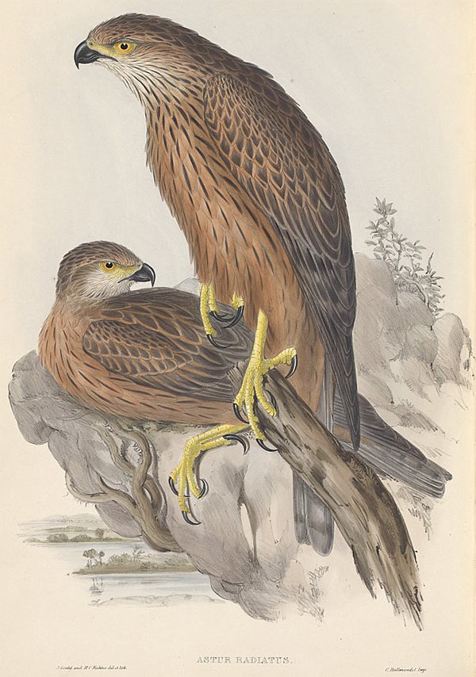

The Town
That Wouldn’t
Disappear
One Australian mining community is putting coal on trial


INTRODUCTION
Bulga is a weary hamlet on the fringe of the largest wilderness in Australia’s southeast – a grizzled landscape of razor cliffs, plummeting canyons and dark canopy that stretches for nearly half-a-million wild acres. Saddleback Ridge, arched and forested, forms a sliver of green across the farmed lowlands on the settlement’s other side. Nearby is a small, dense woodland, populated by squirrel gliders and glossy black cockatoos, growing blown sand dunes carried by winds 18,000 years ago – a hardy, gnarled place that is the last of its kind remaining on earth.
This is the rich and magnificent Upper Hunter Valley of old; the way it might have been 172 years ago when the fabled English ornithologist, John Gould and his artist wife, Elizabeth, travelled the 200 km north from Sydney.The scene prompted Elizabeth to write:
Found the tent pitched in a cleard (sic) spot in the midst of the bush where nature appeared in her wild luxuriance. The Immense parasites twining round the trees taking root some of them at the tops of the trees and hanging down to the ground, others surrounding the trees like a crown – heard the bell bird with his incessant ting ting, the coachwhip bird – a heavy shower of rain accompanied by lightening – soon cleared up – every green thing looked more beautiful for its sprinkling.
Title of related media
- 
The Goulds’ journey – observations from which found a place in their celebrated seven-volume, illustrated Birds of Australia – has enchanted nature lovers through the decades, none more so than Dr Glenn Albrecht, a soft-spoken West Australian-born philosopher.
As a younger man, he retraced the couple’s journey through the Hunter. His travels would spawn a small book and, later, a large idea – a notion that there was a gathering sickness of the mind across the Hunter Valley and elsewhere; a creeping illness that could strike any community in which the landscape was under assault. A homesickness when one was still at home.
Coal has been riven from the Hunter Valley’s 15,000 square kilometres for 200 years. For many of those years the mines managed to tolerably co-exist with the Hunter’s reputation as the Tuscany of the driest continent on the earth. This was a valley of rolling vineyards, rambling dairy farms, expensive horse studs, sentient villages, stone churches and country mansions.
Over the past few decades the open coal pits, spurred by rising coal prices, have cratered the valley. Villages have been swallowed, coal trains rumble day and night, roads are choked.
Some 114 million tonnes of coal – much of it exported through the world’s largest black-coal port in the nearby city of Newcastle – now leaves the Hunter every year.
The ranges of over-burden – a miner’s term for the thousands of tonnes of soil and rock blasted away to get to the coal – line the valley like enlarged grave mounds.
Around the year 2000, when coal mining in the Hunter began to truly accelerate – black coal extraction has almost doubled since – Albrecht, then associate professor of environmental studies at the University of Newcastle, was increasingly sought out by the distraught.
“These were rural people,” Albrecht recalls. “And they wanted to live with clean air beautiful night skies, wildlife, fresh water. And every one of those dimensions of the normal were being taken away from them in such a way that they had no control or power.”
The sense of powerlessness among the people of the valley led Albrecht – now director of the Institute of Sustainability and Technology Policy at Western Australia’s Murdoch University – to think they were suffering, not just from living amid a landscape that was being massively changed by coal mining; they were gripped by a hitherto unrecognised psychological condition.
Title of related media
Albrecht called it solastalgia – a word he derived from the Latin solacium (comfort) and the Greek root algia (pain). He defined it, in a 2004 essay, as “the pain experienced when there is recognition that the place where one resides and that one loves is under immediate assault”.
Glenn Albrecht’s wistful description did not slow the coal frenzy – the mines continued to spread.
And so, too, did word of solastalgia.
In 2009 the British trip-hop duo Zero 7 brought out a track called Solastalgia. The year before, Jukeen, a Slovenian recording artist, used the word as an album title. The term has been used to describe the experiences of Canadian Inuit communities dealing with global warming, farmers in Africa coping with climate change – even impoverished people returning to what was left of their homes in New Orleans after hurricane Katrina.
But it was the people of Bulga – where the possible existence of such an ailment first came to Glenn Albrecht’s attention – who eight weeks ago took solastalgia into a Sydney Court.
Never had the concept been put before a judge. The people wanted the judge to do what few have done before in Australia; tell one of the world’s biggest coal mining companies that it could not bring its open-cut coal mine any closer to their town.
That judge agreed. The mining company was incensed.
This is the story of a tiny town that fought back. The story of what is revealed when a court of law takes apart a big coal miner’s case.
Chapter 2
THE MINER
Nights come with a low rumble for Bulga’s scattered 150 homes. An arc of open-cut coal mines extends some 25 kilometres across the land, to the east and north. Outsized mining trucks crawl up and down the mine haul roads through the night; the draglines – metallic reptiles which claw at the land – thump and clang. Dozer tracks clack-clack-clack over the ground.
The alarms of reversing vehicles beep, beep. Mining does not respect community hours. Kids toss and call out, mothers pop sleeping pills, tired men curse.
The biggest names in coal mining operate within this arc. The US coal giant, Peabody Energy operates the Wambo open-cut mine in the north, Coal and Allied has the Warkworth/Mt Thorely mine in the middle and to the south Xstrata runs the Bulga mine.
Warkworth/Mt Thorely is the largest mine in this district and the closest to Bulga township. It is ultimately run by London-headquartered miner Rio Tinto – a global employer of more than 70,000 people — which controls Coal and Allied. Rio Tinto became the central player in the unfolding of the settlement.
Cut deep into the land, Walkworth/Mt Thorely’s boundary extends along an 8 km front; it employs 1,300 people to keep the mine operating day and night, and runs 65 huge-haul trucks. It yields about 10 million tonnes of coal a year – much of which is exported. The Japanese conglomerates Mitsubishi and Nippon Steel own chunks of the mine.
The mine has a government-issued permit – known as a planning consent – that allowed it to keep operating through to 2021. But there were strings attached, big strings; as a condition of the current consent, granted a decade ago, the company undertook never to destroy historic and precious land forms around Bulga – despite holding the lease over such lands. It had also promised not to mine other, less sensitive areas, unless there arose some clear justification of a social, economic or environmental nature.
Two antediluvian landscapes stand out in the areas over which the mine has leasehold, and back in 2003 Rio Tinto had vowed to protect them.
The first are the ancient dunes just west of the mine. Called Warkworth Sands Woodland, they were formed by wind-blown sands coming to rest on an old river terrace about 18,000 years ago. They are the last known such landform on the planet.
About 500 hectares – less than one-tenth of the original area of Warkworth Sands Woodland – remains. The squirrel gliders and the glossy black cockatoos are among the dwindling species that dwell within it, and the area itself has been officially listed as endangered for the past decade.
The second landscape is the low-slung Saddleback Ridge just to the northeast of Bulga; a green hump – the last shield between the village and the mine-torn earth.
Rio Tinto has long known masses of coal lie beneath both areas. Its could be mined by open cutting. By 2010 – with the long-term coal price having soared by 160 per cent over the previous seven years – the miner decided that the coal beneath the Warkworth Sands Woodland and Saddleback Ridge was now too valuable to be left in the ground.
Rio wanted to extend the mine south, and west toward Bulga – carving up another 1,200 hectares of woodland that would advance the mine to within 2,600 metres of the village. Saddleback Ridge and Warkworth Sands were in its path.
Rio Tinto had put those undertakings in a Deed of Agreement; now that agreement was to be abandoned because it had become profitable – due to accelerating coal prices – to dig out the coal;
Not only would the Saddleback Ridge disappear, but another 106 hectares, almost a quarter, of the last of the earth’s ancient Warkworth Sands Woodland would also be mown down. And the dunes beneath – which date to the Pleistocene era when giant mega fauna roamed Australia – would be removed
Rio Tinto now also wanted its mine – with its newly extended boundaries – to run until at least 2032. The miner wasn’t far short of embarrassed that it was breaking its word. It prepared a glossy summary of the plan that admitted, under the veil of corporate speak, that it was reneging on the offset deal:
The decision to mine these areas has not been taken lightly. The change will afford employment and economic benefits locally and across the region, and will include a significant bio-diversity conservation package. However, we acknowledge the impact this issue has had on community trust. We have learnt from this process and we will seek to actively work with the community to rebuild this trust.
Rio Tinto claimed that the enlarged mine would directly create an extra 150 full-time jobs and extend the life of the existing jobs by another 11 years. And the New South Wales Government stood to gain an extra $650 million in royalty payments from extra coal that the mine would produce; nobody, then, was hugely surprised that the government, in February last year, green-lighted Rio Tinto’s plans to extend the mine.
But one slight, energetic man in his 70s, who’d just spent a decade building a beautiful home where Bulga meets the wilderness, wasn’t prepared to take the decision lying down.
Chapter 3
THE FIGHTER
John Krey, a father of three daughters, had qualified as a quantity surveyor and had gone on build a 40-year career in managing large construction projects. His sparkling eyes and firing wit mask his 72 years and a hard-headed resolve. He’d spent the last 13 years of his working life as an executive overseeing the University of Sydney’s building works program.
As retirement approached, he and wife had spent six months looking for a setting in which to build a new home. They wanted to leave Sydney’s northern beaches, where they’d raised their girls, and go deep into the bush. Their search led them to Bulga. Just outside the town, they found a piece of gently sloping land that morphed into the great treed wilderness behind – the Wollemi National Park. They bought the land in 2002 and started building the next year.
Krey is a careful, resourceful man. He contacted the local council and the Mine Subsidence Board to ensure that his new property was not in the path of a mine expansion, nor vulnerable to subsidence from old mining activity.
He relied heavily on Rio Tinto’s 2003 Deed of Agreement that the Warkworth Mine would not be coming any closer to the town. “That was it. No more,” says Krey. “There was an agreement they’d never come any further west (toward Bulga). So on that basis, we were happy. We put more money into this house than we should have. You don’t look at the resale value when you are going to retire and not resell.”
The mine was six kilometres away.
One morning in 2010, Krey wandered down to his letter box. There was a pamphlet from the local Bulga-Milbrodale Progess Association. Rio Tinto had applied to extend the mine to within 2,600 metres of the village.
Incensed, Krey began organising. He had no doubt that a mine on his doorstep would not only ruin the peace he’d long sought, but that Bulga itself would quickly go the way of other nearby towns emptied by encroaching mines. He enlisted others in the town, such as mining engineers, mine workers and conservationists, to begin a counter-attack.
More than 80 villagers turned out for the first public meeting called in Bulga to halt the mine. Says Krey: “Even guys who work in the mines said, ‘Look we love the mine, it gives us good money and a good income, a good job, but we don’t want the mines coming into our home at night. We don’t want the noise and dust. Where they are now is close enough.’”
There’s a kind of limbo that hits a small town when a huge coal mine flexes. Life suddenly becomes uncertain. What will happen if the mine expands? And if it doesn’t?
Ron and Pauline Corino were caught. They’d bought a large citrus orchard on Bulga’s outskirts 25 years ago, and had dreamed of growing their own vineyard. When they reached retirement, they’d made it happen. They built a home they grew to love deep within the trees – Ron had sculpted an access track that wound crazily through the iron-bark forest. He hated cutting down trees.
Years of manual work have taken their toll on Ron’s back: “The mower just kills me,” he says. So the couple are looking to sell, but buyers are scarce. “I feel we have lost about $300,000 on the value of the property. We are stuck here unless somebody comes along and makes a decent offer. I think if anybody was going to buy the property now, they’d want it cheap because of the expansion plan,” he says.
Paul Burgess and Marguerite Hannaberry bought the town’s cosy Cock Fighter’s Tavern a couple of years ago. Paul wanted to escape the corporate ladder he’d been on in the advertising business. They have a young child. While they’ve been careful not to publicly take sides – Marguerite frets over the prospect of an enlarged mine. If it expands it will likely be required to buy about 20 houses in the town, because they will be deemed too noise affected. She worries for the little pub’s trade.
Krey knew the town had to produce a plausible case against the mine’s expansion. But he was confronted with Rio Tinto’s limitless expertise and vast financial resources, which had enabled the miner to produce thousands of pages of documentation, including expert consultant’s reports, to argue its expansion case to the New South Wales and Federal governments.
Krey asked Rio Tinto for money to help fund a case against the mine. It refused. But when Krey discovered the miner had given money to community opponents overseas, he asked again. Rio Tinto eventually came through with $24,000. Krey and his helpers in Bulga hired their own consultants — on air quality, water, noise and ecology. They eventually produced a 42-page report rebutting the mine expansion.
It was one of a 102 submissions put to the NSW Department of Planning, which was required to make a recommendation on whether the mine expansion could go ahead. Just one submission supported the enlargement of the mine. Nonetheless, the government officials agreed that the mine should be expanded, a recommendation that then went to what Rio Tinto thought should be its final hurdle, a three-person panel of retired mandarins (former senior New South Wales public servants) appointed by the Government – the Planning Assessment Commission – which is the state’s arbiter for major projects.
In early February last year, Rio Tinto finally got the news it has been seeking since 2009; the three-person panel had ruled that the mine could be extended to Bulga’s doorstep.
The panel employed an eyebrow-raising logic for allowing Rio to renege on its 2003 promise to protect particular areas: that is, the panel’s report now dismissed the protected areas as being of questionable value and said they had been "thrown together” in haste.
But an intriguing few paragraphs were tucked away at the end of the panel’s nine-page report – words that harked back to Glen Albrecht’s notions of a mind sickness in the Hunter.
The panel had acknowledged that small villages faced with a mine on their doorstep could be subject to having their character radically changed, and that they frequently all but disappeared due to an exodus of residents.
Title of related media

And the mandarins – who included Neil Shepherd, former chief of New South Wales’ zoos, and Brian Gilligan, once a chief of the Environment Protection Authority – were not blind to the rising tide of opposition to mines from villagers. They issued what might have been read as an invitation to a judge – should he or she be of such a mind – to rewrite the rulebook for big coal mining companies that threaten tiny villages.
The panel’s report concluded: “If this is to change then New South Wales will need to develop a clear policy position that provides further guidance to decision-makers as to how social impacts on rural villages are to be balanced in the approval process for coal mines.”
John Krey and his helpers had one last card to play. They’d go to court to try to achieve what had never been done before; they’d ask a judge to toss out the mandarins’ approval for the mine.
Krey won crucial backing: the Environmental Defender’s Office – a Sydney community legal centre funded mostly by grants – agreed to take on Bulga’s case against Rio Tinto. The Office was drawn to the case because it, too, felt the decision to allow the mine to go ahead was deeply flawed – especially as the miner was being allowed to renege on its past undertakings.
The legal centre would take a case to the NSW Land and Environment Court, to overturn the government’s decision to allow Rio Tinto to expand the mine. The case would be run by a young solicitor, Natasha Hammond-Deakin. A committed environmentalist, she is a board member of the Australian Wild Law Alliance. Wild law is a radical legal theory that holds that the current legal system is designed to fuel infinite economic growth and that this must be stopped; instead the legal system must recognise humans’ inter-connectedness with nature. It was Hammond-Deakin who hit on the idea of calling evidence from Albrecht about solastalgia.
Then they happened to draw a judge well schooled in the ways of miners, who was ready to hear them; and who had the balls to upend the established order. He was also no stranger to the work of the Environmental Defender’s Office; indeed, he’d once served as its first principal solicitor. He was now the Land and Environment Court’s most senior judge.
Chapter 4
INTO COURT
Judge Brian Preston is a jurist with a green thumb and heavyweight environmental credentials. He has been a prolific writer and commentator on the law and the environment, he’s drafted environment laws for foreign governments and was a frequent visitor to World Heritage sites. In his spare time he built a magnificent garden – after gaining an advanced certificate in urban horticulture.
It was to be a marathon hearing; the judge was required, in effect, to put himself in the shoes of the Minister for Planning and re-examine the entire case for expansion of the mine.
Both the mine and the people of Bulga would call an array of witnesses,including Glenn Albrecht, for the village.
Preston began the case in late August last year. It would not end until mid-November.
Pauline Corino was one of the Bulga villagers who set herself the task of ensuring that Brian Preston could be in no doubt of the strength of opposition to the mine’s expansion.
“We made sure we kept the courtroom packed,” she says. “At least it let the judge know we were really behind this. We made sure we got there early and that there wasn’t much room for Rio’s people to get in there. There were days when there were so many of us that the judge invited us to sit in the jury boxes.”
It soon became clear that Judge Brian Preston was going to be no easy ride for Rio Tinto. Or for the New South Wales Government, which now had to defend its approval of the enlarged mine. Early in the second week of the case, Preston so determinedly took on the barrister appearing for the government, that the people of Bulga would come to see the clash as the turning point of the court hearing.
At issue was the question of what would happen to the 20 or so houses in the heart of Bulga, which the mine might have to purchase if the noise levels from its enlarged mine were too high. This was a tricky point for Rio Tinto and the government – as the prospect of the village losing its heart certainly bolstered the villagers’ case against the mine expansion. Rio Tinto’s tactic was to argue that the houses would not be left empty; the company could rent them out to its mine employees.
The judge began pressing an uncomfortable point; why was it acceptable for mine-worker tenants to be put into houses deemed too exposed to noise for their original owners to live in?
Judge: Just discriminatory, I think it is. I mean it’s got to be said to be discriminatory and it’s got the potential to work injustice to people who, for whatever reason, are taken advantage of, you know. They may be lured by low rent. They [the mine] may well say I’ll rent this place to you on a very low rent because you are going to be subjected to this or because you will have to sign a lease which says you won’t complain and that’s what they do all the time. You will not make submissions about complaining about these particular things. Now I can’t stop them going out and doing that. But I don’t know whether I want to be complicit in that, for people in the future, being feeling like that. That that outcome can turn up.
Government Barrister: Yes, but ultimately, Your Honour, you’re talking about tenants –
Judge: They’re people.
Government Barrister: No.
Judge: I’m sorry, they’re not just tenants.
Government Barrister: No, Your Honour, please let me finish. Please let me finish. You’re talking about tenants – there’s a difference between somebody who owns the residence and a tenant in terms of the long term for which they may need to stay there.
Judge: Why?
Government Barrister: Well, Your Honour, a tenant – and this is what I was seeking to say in relation to schedule2, a tenant can – if a tenant finds it unacceptable, the tenant can leave. I’m simply saying in relation to – and, as I say, subject to there not being lease consequences and I have to find an answer to that question, but –
Judge: This is not known – this concept of a difference between a tenant and a property owner is not known to the Environmental Planning and Assessment Act.
Government Barrister: No
Judge: This court does not make decisions about whether a development is acceptable or not in all of the different types on the basis of whether the person who’s going to be subject to the impacts is a tenant or a property owner. That is simply not a basis and I’m surprised that it’s been put forward.
On the morning of Monday, April 15, the Bulga villagers were back in Preston’s Court in Sydney’s Macquarie Street. The Court hearing had finished five months before and Preston was ready to deliver his decision.
John Krey and his wife were there. They had steeled themselves for at least an hour-long dissertation from the judge as he laid out the reasons for his decision – whatever it would be.
“The judge came in, we all rose, he nodded at his assistant and then he said ‘I uphold the appeal, I withdraw the mine approval,’” recalls Krey.
“We couldn’t believe it.”
For the first time in history, a judge of the Land and Environment Court had overturned a government decision that had been in favour of a big open-cut mine.
Title of related media
Tears began to flow from the eyes of Natasha Hammond-Deakin, the solicitor from the Environmental Defender’s Office who’d spent months pulling together Bulga’s challenge to the mine.
She was a very different character from her partner on the case, the smooth and suited barrister whom the Environmental Defender’s Office had retained to argue the case before the judge. Robert White, a personable Englishman with a cut-glass accent, had built up a sizeable environmental and planning practice at the London Bar, before he married an Australian four years ago and migrated to Australia.
White had decided early on that he didn’t want to settle for the outcome that is more usual when big development projects are reviewed by the courts; that is, they’re often green-lighted, but with extra conditions as concessions to the community. White decided that this was a case capable of making legal history if the judge could be persuaded to reject the expanded mine outright. White had become a frequent guest in the Krey’s home in Bulga while he was researching the case. Krey would see the barrister‘s light still on in his room as he sifted information into the small hours.
Judge Brian Preston’s 96-page ruling – when it was unveiled – comprehensively demolished Rio Tinto’s case to extend the mine to Bulga’s boundaries.
And, if it stands, it looks set to radically change the way in which big mining and other construction projects are approved, throughout Australia. It requires that much more weight be given to the environmental and social impacts such projects will have. And that is the fear expressed since by the aggrieved mining lobby.
For a deeper understanding of Judge Preston’s rationale we must briefly look to the gilded life of Cora Timken Burnett – heiress to the Timken ball-bearing fortune – who died in New York in the mid-1950s. An avid collector of art and artefacts (she imported an entire Hindu Temple to her New Jersey estate), she bequeathed many valuable paintings to several galleries “in equal shares”.
 This is the text that goes with the image
This is the text that goes with the image
Although generous, this represented a time-bomb for a court to sort out when she died. What constituted an equal division of paintings? The American legal philosopher Lon Luvois Fuller later used the case to describe a new legal philosophy – what he called the polycentric legal problem.
Fuller explained it this way: “What makes this problem of effecting an equal division of the paintings a polycentric task? It lies in the fact that the disposition of any single painting has implications for the proper disposition of every other painting. If it gets the Renoir, the Gallery may be less eager for the Cezanne but all the more eager for the Bellows, etc.”
Judge Preston applied Fuller’s thinking about how the legal system could achieve a ball-bearing heiress’s wishes, expressed half a century ago, to a very modern dilemma; how to balance the soaring demand for coal against the environmental and social impact of mining. He saw that he had not one issue to resolve, but many, as posed by the mine’s environmental, social and economic impacts. It was a polycentric task. The resolution of each aspect would impact upon the next.
One example was the testy exchange in court over what would happen to 20 noise-affected houses in Bulga’s centre. If they were to be leased to miners, an injustice may be done to their new tenants. But if they were to be left empty, then the town would suffer the social impact of losing a large proportion of its citizens.
The judge set about investigating each social, economic and environmental issue raised by the mine expansion, and deciding how much weight they should be given. There followed a forensic examination of every part of the mine’s case – and it all ended in defeat for the mine.
Judge Preston found that the environmental offsets – new areas of bushland and vegetation – that the mine was proposing to protect in return for mining other sensitive areas, were far from adequate. Some were up to 100 km away from the mine site. Another was a farm acquired by the mine which had been severely damaged by decades of clearing and grazing. Yet the mining company had suggested that the old property be regarded as a part replacement for the areas of unique woodlands that it wanted to destroy.
Title of related media
Gallery placeholderThe judge accepted that the interviews Glenn Albrecht had conducted with the people of Bulga – to discover whether they were suffering from solastalgia (Albrecht concluded that most of his interviewees were afflicted) – had limitations. But he said the deeply unhappy residents could not be ignored.
The judge concluded that there was no doubt the enlarged mine would adversely affect the village: “I am satisfied that approval of the Project would have some positive social impacts, particularly in the form of continuing employment in the local and broader community, but there will be significant negative social impacts arising from continuation of adverse impacts of noise and dust, visual impacts, and adverse impacts arising from a change in the composition of the Bulga community.”
Ultimately, it was in its economic analysis that Rio Tinto really foundered in Preston’s court. The mine produced an economic analysis that claimed eye-watering riches; Rio Tinto projected that the enlarged mine would add $16 billion to the Hunter Valley economy by 2031 and create, over the same time, an extra 44,000 direct and indirect jobs (each defined as full-time for a year). Thus, argued the miner, and the government, the economic benefits far outweighed the nastier social impacts.
But the judge wasn’t buying it – especially after hearing that the mine’s economic analysis rested on economic modelling so old that it pre-dated the widespread use of mobile phones and the Internet. An economist, Dr Richard Denniss, called by the villagers, said the 2001 data on which the mine’s economic modelling was based, could not accurately simulate today’s economy. Denniss said huge technological gains in mining and greater automation meant that the job creation would be less than the mining company had claimed.
Denniss took even greater issue with Rio Tinto’s claims that there was a pool of unemployed skilled workers in the Hunter ready to take on the new jobs that the enlarged mine would create. Denniss said the claim was nonsense. If the company’s claim were correct, miners’ wages should be falling and miners would not be pushing for more foreign workers to be allowed into Australia. Instead, Denniss said, the expansion of the Warkworth was likely to cannibalise jobs in other industries in the Hunter Valley.
The judge agreed, saying he accepted there was no ghost pool of skilled unemployed in the Hunter and that the enlarged mine would simply draw workers away from other industries. And that the jobs they left might not be filled. Thus, he curtly dismissed the mine’s economic analysis as being of limited value.
Paragraph number 498 of the 500 of Preston’s judgement distills to 112 words what had become of Rio Tinto’s grand intentions for its enlarged mine:
I have found, among other things, that the Project would have significant and unacceptable impacts on biological diversity, including on endangered ecological communities, noise impacts and social impacts; that the proposed conditions of approval are inadequate in terms of the performance criteria set and the mitigation strategies required to enable the project to achieve satisfactory levels of impact on the environment, including the residents and community of Bulga; and that the proposed conditions of approval, including by combining the Warkworth mine with the Mt Thorley mine, are likely to make monitoring and enforcement of compliance difficult, thereby raising the possibility that the project’s impacts may be greater and more adverse than allowed by the conditions of approval.
In short, Rio Tinto had succeeded in convincing the judge of very little.
The miner was outraged. Rio Tinto’s energy chief Harry Kenyon-Slaney, penned an angry article for The Australian newspaper, in which he savaged the decision and warned of lay-offs. He claimed that Preston’s decision would encourage more court challenges to big coal mines. And he had a private meeting with New South Wales Premier Barry O’Farrell, to protest the court’s decision – raising the prospect that Rio Tinto would seek the state government’s intervention to roll the court decision, if it didn’t succeed in having it overturned by a higher court.
Rio Tinto and the state government have duly launched an appeal in the New South Wales Supreme Court, to overturn Judge Brian Preston’s decision. To be heard at the end of July, the appeal is made on the basis of Rio Tinto’s claims that the panel of mandarins – appointed as decision makers for the state’s Minister for Planning – had decided the mine was overwhelmingly in the public interest.
“In such circumstances the court, the judges of which are not elected officials, should only overturn such a public interest decision in cases where the decision of the minister is clearly wrong,” says Rio Tinto’s statement on its appeal.
Chapter 5
A TOWN DIVIDED
Since the court’s decision to reject the expanded mine, the odd car has pulled up late at night outside John Krey’s isolated Bulga property. And someone called the tavern and made a death threat against him.
Krey does not blame local people for this animosity; his anger is directed at Rio Tinto’s management and the coal lobby which has publicly said that the court decision may well result in more mine layoffs. Such talk fuels anxiety in a town that is already on edge because of the falling coal price. Jobs for mine contractors and mine workers are slowly contracting across the Hunter. People are feeling the end of the boom.
It’s noticed by Paul Burgess who owns Bulga’s Cock Fighter’s Tavern. “We do miss the mining contractors,” he says. “We used to have 30 guys in here on Thursday nights – they’d come up for a day’s work and then head off to Sydney, Newcastle, wherever. It’s downsizing, the price of coal, the Australian dollar – it impacts on exporting and a lot of that coal, if not most of it, gets exported.”
Krey says he and his group aren’t responsible for such changes: “We are not a green group, we are not trying to stop the world, we are not trying to stop coal, we are not trying to stop the nuclear bomb. We are just a local progress association concerned with local matters.”
That is not the way some others in the hamlet see it. They disparage Krey and the progress association as the ‘Secret Squirrels’ – a group of country squires who took it upon themselves to act and speak for the village. This opinion ignores the reality that meetings called by the Progress Association to fight the mine’s expansion were open to all.
This is the text that goes with the image
James Van der Heyden, 37, drives a monstrous haul truck at the mine and rents a house behind the tavern. He’s been employed at the mine for four years and has worked his way up to an annual salary greater than $100,000. Naturally, it’s a job he wants to keep, but he says the mine has warned workers to expect layoffs. He fears he will be one of them.
Van Der Heyden is one of those aggrieved that mine expansion was stopped by some of the townspeople: “The mines haven’t been here for a year or two, mate,” he says. “They’ve been here for 20 or 30 years, and to jump up and down now and say it’s going to disturb their lifestyle – well it’s a bit late. It’s very late. It’s way too late.”
“Also, jobs, mate. Where am I going to earn $130,000 or $140,000 a year?” he asks. “I’d have to go back to school and get qualifications, but this could give me a job for the next 20 or 30 years until I retire.
“A lot of fathers and mothers around here work in the mines,” he adds. “And the kids want to follow in the same footsteps. What else would those kids do in the area? There’s only a certain number of employers out there and times are getting worse and worse. Not just for mining, but for everything. We’ve got no manufacturing left. That’s all sort of shut down. So you’ve got to work for one of the fast food chains or something.”
Title of related media
Paul Burgess and his partner, Marguerite, the Bulga publican, walk a fine line – both with their customers and their own attitudes to the mine expansion. They are in the high-noise acquisition zone and could have demanded the mine buy them out at any time up until the end of 2020 – if the mine expansion had gone ahead. But the mine withdrew all offers of acquisition when it lost the court case; a decision – whether it was intended to do so or not – that hardened some attitudes against Krey and the Progress Association.
Although he’s sorry to lose that financial backstop, Burgess says the pub, which also has a busy restaurant, pays its way.
Says Burgess: “We empathise with the mines and their situation. But we don’t like being blamed for people losing their jobs. They [the mines] are laying people off and blaming the people of Bulga for it. People are being told that Bulga is the reason you are losing your jobs – which is rubbish. The current economic situation is causing those job losses, but they are blaming the Land and Environment Court, which isn’t true.”
Chapter 6
Chapter title
Danielle Hanson, 40, lives in Bulga with her three children. Her husband, a coal miner, travels away from the village to work in an underground mine. He dislikes open-cut mines because of their impact on the environment.
Hanson says the Bulga community became divided after the government first approved the mine expansion in 2012, and the mine made home-acquisition offers to some residents but not others.
“It became such a hostile community. It was never like that,” she says.
She feels trapped in the town. Her home is outside the cluster of 20 or so noise-affected houses that still stand to be acquired by the mine if the expansion does, somehow, go ahead. And she fears that the value of their home will plummet as a result.
“You couldn’t sell your house for $200,000 here. It’s a waste of time. You have no future. You don’t know whether you are going to be here to see your children through education. Do you re-do the bathroom?”
Plus, she says, the family is already severely noise-affected by the noise of the nearby mines. “We have no sleep. My children wake up at 2 or 3 in the morning screaming because they think there is a dinosaur. The dinosaur is actually the mine drag line.”
Title of related media
Hanson herself takes sleeping pills she says, to catch up on sleep on the nights her husband is not working.
She also believes that blasting from the mines collapsed the family’s spring-water well and caused subsidence on their land.
Yet Hanson, like others in Bulga who are reliant on mining, has an ambivalent attitude to the mining companies: “I don’t blame the mine,” she says. “The mine is doing its job. It’s getting the coal out of the ground. It’s the government that hasn’t stood up for the people.”
One-hundred-and-fifty years ago, the ornithologist John Gould – whose journey through the Hunter Valley was to kindle Glenn Albrecht’s theory of solastalgia – foresaw the need for Australians to hang on to the nature that surrounded them. In the preface to his later publication, Handbook to the Birds of Australia – a two-volume work bound in green cloth with gilt lyrebirds on the covers – he wrote a ringing lament for wild Australia:
It may be possible – and, indeed it is most likely – that the flocks of Parakeets no longer fly over the houses and chase each other in the street of Hobart Town and Adelaide, that no longer does the noble Bustard stalk over the flats of the Upper Hunter, nor the Emus feed and breed on the Liverpool Plains, as they did at that time; and if this be so surely the Australians should at once bestir themselves to render protection to these and many other native birds: otherwise very many of them, like the fine Parrot of Norfolk Island, will soon become extinct.